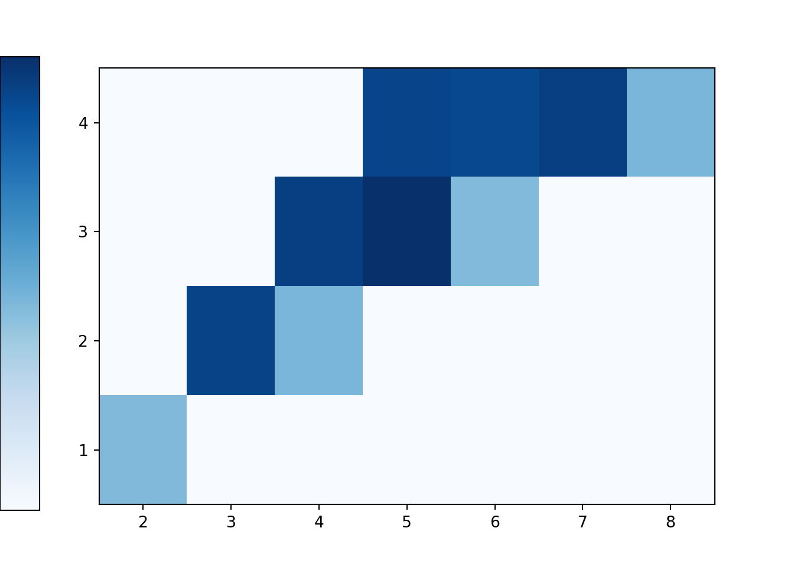

3.3 Approximating probabilities: Simulation margin of error
Recall Section 1.2.1. The probability of an event can be approximated by simulating the random phenomenon a large number of times and computing the relative frequency of the event. However, while after enough repetitions we expect the simulated relative frequency to be close to the true probability, there probably won’t be an exact match. Therefore, in addition to reporting the approximate probability, we should also provide a margin of error which indicates how close we think our simulated relative frequency is to the true probability.
Continuing the dice example, suppose we want to estimate \(\IP(X=6)\), the probability that the sum of two rolls of a fair four-sided is six. The true probability is \(3/16=0.1875\). We will now carry out an analysis similar to the coin flipping example in Section 1.2.1 to investigate simulation margin of error and how it is influenced by the number of simulated values used to compute the relative frequency.
We will perform a “meta-simulation”. The process is as follows
- Simulate two rolls of a fair four-sided die. Compute the sum (\(X\)) and see if it is equal to 6.
- Repeat step 1 \(n\) times to generate \(n\) simulated values of the sum (\(X\)). Compute the relative frequency of sixes: count the number of the \(n\) simulated values equal to 6 and divide by \(n\). Denote this relative frequency \(\hat{p}\).
- Repeat step 2 a large number of times, recording the relative frequency \(\hat{p}\) for each set of \(n\) values.
Be sure to distinguish between steps 2 and 3. A simulation will typically involve just steps 1 and 2, resulting in a single relative frequency based on \(n\) simulated values. Step 3 is the “meta” step; we see how this relative frequency varies from simulation to simulation to help us in determing an appropriate margin of error. The important quantity in this analysis is \(n\), the number of simulated values used to compute relative frequency in a single simulation. We wish to see how \(n\) impacts margin of error. The number of simulations in step 3 just needs to be “large” enough to provide a clear picture of how the relative frequency varies from simulation to simulation. The more the relative frequency varies from simulation to simulation, the larger the margin of error needs to be.
In the meta-simulation, the main quantity of interest is the relative frequency, which will vary from simulation to simulation. We can combine steps 1 and 2 to put the meta-simulation in the framework of the simulations from earlier in this section. Namely, we can code the meta-simulation as a simulation in which
- A sample space outcome represents \(n\) values of the sum of two fair-four sided dice
- The main random variable of interest is the proportion of the \(n\) values which are equal to 6.
Let’s first consider \(n=100\). The following Symbulate code defines the probability space corresponding to 100 values of the sum of two-fair four sided dice. Notice the use of apply which functions much in the same way44 as RV.
## <symbulate.results.Results object at 0x000000002A6D83C8>In the code above
DiscreteUniform(1, 4) ** 2simulates two rolls of a fair four-sided die.apply(sum)computes the sum of the two rolls** nrepeats the processntimes to generate a set ofnindependent values, each value representing the sum of two rolls of a fair four-sided dieP.sim(5)simulates 5 sets, each set consisting ofnsums
Now we define the random variable which takes as an input a set of \(n\) sums and returns the proportion of the \(n\) sums which are equal to six.
## <symbulate.results.RVResults object at 0x000000002AB57108>In the code above
phatis anRVdefined on the probability spaceP. Recall that an outcome ofPis a set ofnsums (and each sum is the sum of two rolls of a fair four-sided die).- The function that defines the
RViscount.eq(6), which counts the number of values in the set that are equal to 6. We then45 divide byn, the total number of values in the set, to get the relative frequency. (Remember that a transformation of a random variable is also a random variable.) phat.sim(5)generates 5 simulated values of the relative frequencyphat. Each simulated value ofphatis the relative frequency of sixes innsums of two rolls of a fair four-sided die.
Now we simulate and summarize a large number of values of phat. We’ll simulate 100 values for illustration. Be sure not to confuse 100 with n. Remmeber, the important quantity is n, the number of simulated values used in computing each relative frequency.

We see that the 100 relative frequencies are roughly centered around the true probability 0.1875, but there is variability in the relative frequencies from simulation to simulation. From the range of values, we see that most relative frequencies are within about 0.07 from the true probability 0.1875.
Now we repeat the analysis, but with \(n=10000\). In this case, each relative frequency is computed based on 10000 independent values, each value representing a sum of two rolls of a fair four-sided die. As before, we simulate 100 relative frequencies.
n = 10000
P = (DiscreteUniform(1, 4) ** 2).apply(sum) ** n
phat = RV(P, count_eq(6)) / n
plt.figure()
phat.sim(100).plot()
plt.show()Again we see that the 100 relative frequencies are roughly centered around the true probability 0.1875, but there is less variability in the relative frequencies from simulation to simulation for \(n=10000\) than for \(n=100\). From the range of values, we see that most relative frequencies are within about 0.007 from the true probability 0.1875. That is, the larger the number (\(n\)) of values used in the computation of relative frequency, the smaller the margin of error. As in Section 1.2.1 it appears that when we increase \(n\) by a factor of 100 (from 100 to 10000) we achieve an extra decimal place in precision. This is indeed the case in general.
- Remember: in any simulation the resulting probabilities are approximate.
- The margin of error between an actual probability and a simulated relative frequency is roughly on the order \(1/\sqrt{n}\), where \(n\) is the number of simulated values used to calculate the relative frequency
- More precisely, if \(\hat{p}\) represents the simulated relative frequency, we estimate with 95% confidence46 that the interval with endpoints \[ \hat{p}\pm 2 \sqrt{\frac{\hat{p}(1-\hat{p})}{N}} \] contains the actual probability.
- Warning: alternative methods are necessary when the actual probability being estimated is close to 0 or to 1.
One difference between
RVandapply:applypreserves the type of the input object. That is, ifapplyis applied to aProbabilitySpacethen the output will be aProbabilitySpace; ifapplyis applied to anRVthen the output will be anRV. In contrast,RValways creates andRV.↩︎Unfortunately, for techincal reasons,
RV(P, count_eq(6) / n)will not work. It is possible to divide bynwithinRVif we define a custom functiondef rel_freq_six(x): return x.count_eq(6) / nand then defineRV(P, ref_freq_six).↩︎We will see the rationale behind this formula later in the class. The factor 2 comes from the fact that for a Normal distribution, about 95% of values are within 2 standard deviations of the mean. Technically, the factor 2 corresponds to 95% confidence only when a single probability is estimated. If multiple probabilities are estimated simultaneously, then alternative methods should be used, e.g., increasing the factor 2 using a Bonferroni correction. For example, a multiple of 5 rather than 2 produces very conservative error bounds.↩︎